No. 01 · PressBest seller
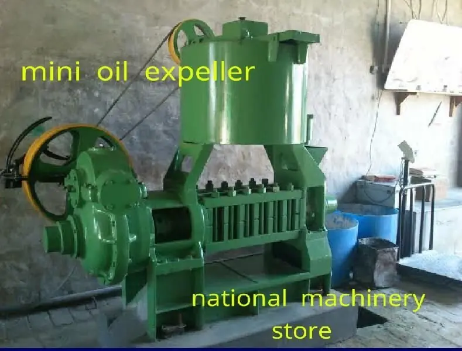
Mini Oil Expeller
Compact screw-press expeller for small mills and start-ups. Low power, simple to run, all common oilseeds.
1–5 TPD3–15 HP
Specs & price Quote
Oil expellers, filter presses, conveyors, refining vessels and spare parts — supplied, erected and serviced by one team from Kadi, Gujarat. New or refurbished, GST-billed, delivered across India and exported to Africa.
Buy one machine or the complete plant. Every stage below is supplied, erected and serviced by the same team, so one supplier answers for your output.
Move seed & cake
Feed seed into the press and carry cake away — without breakage, dust or manual handling.
Expel the oil
Screw-press expellers from 1 tonne a day to 50+ tonnes a day, new or refurbished.
Clarify crude oil
Filter presses strip suspended solids, wax and fines from freshly pressed oil.
Neutralise FFA
Alkali neutralisation removes free fatty acids for market-grade refined oil.
Erect, maintain, supply
Complete plants, erection, AMC and spare parts that keep the line running.
Every product has its own spec sheet — capacity, power, materials and warranty. Open a card for full specifications, or tap Quote to get today's price on WhatsApp.

Compact screw-press expeller for small mills and start-ups. Low power, simple to run, all common oilseeds.
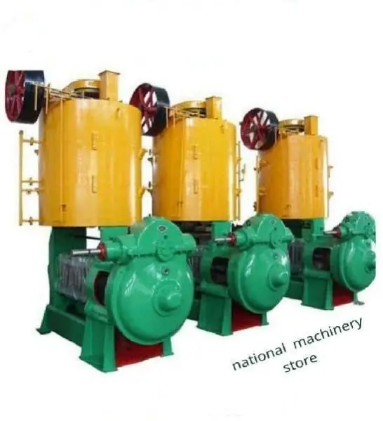
Industrial screw press for continuous 24-hour crushing. Heavy-duty worm shaft, barrel and gearbox.
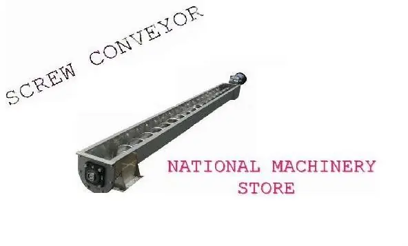
Heavy-duty screw conveyors for seed, cake and bulk material. MS or SS, built to your plant layout.
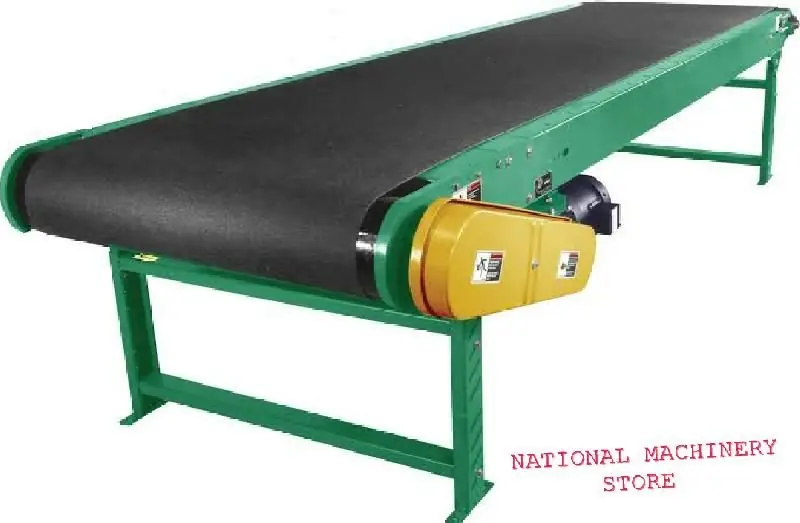
Rubber and PVC conveyor belts for oil mills and agro-processing. All grades, widths and lengths.
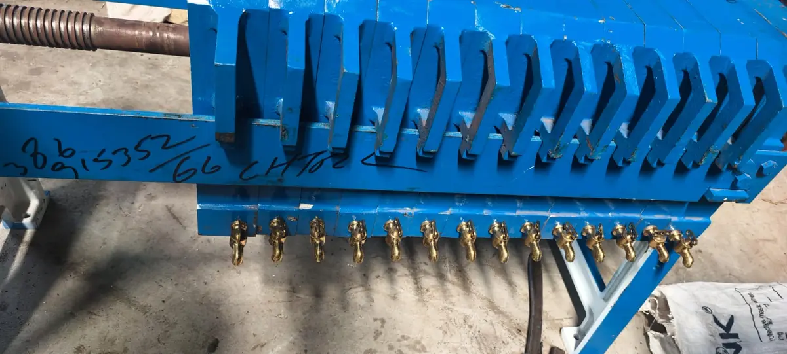
Heavy-duty cast-iron filter press for oil clarification. Long-lasting, easy plate and cloth change.
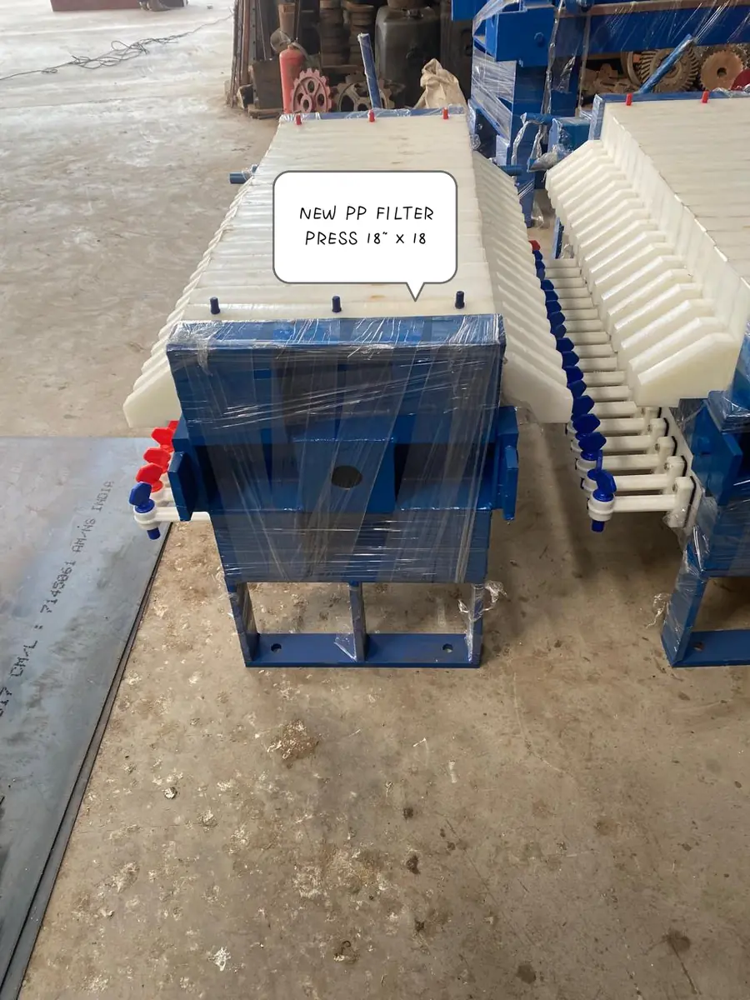
Lightweight, fully hydraulic PP filter press. Corrosion-free plates, all sizes, strong value.
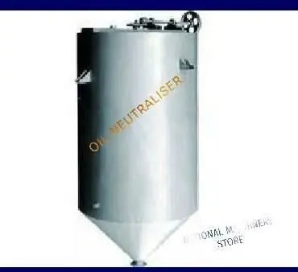
Steam-jacketed vessel that neutralises free fatty acids in crude oil — the first step of refining.
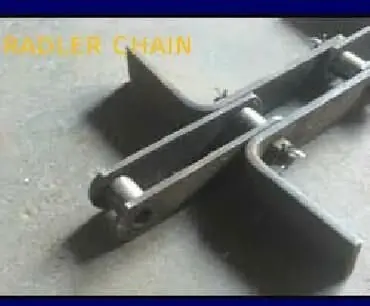
Redler-type drag chain for en-masse conveying of seed, cake and meal. Hardened alloy steel.
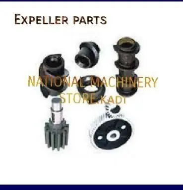
Worm shafts, barrels, cages, bearings, gearbox parts and seals for all major Indian expellers.
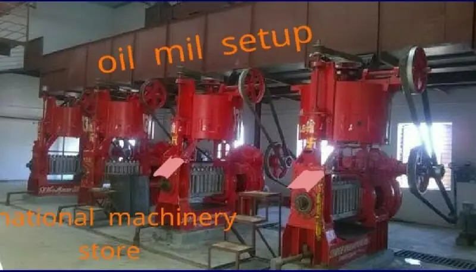
Complete oil mill machinery — seed cleaning to filtration and storage. New and used.
Erection, re-erection, demolition and AMC — from foundation to a commissioned, running plant.
Worm shafts, barrels, cages, bearings, gearbox parts and seals for all major Indian expeller brands — stocked, with no minimum order.
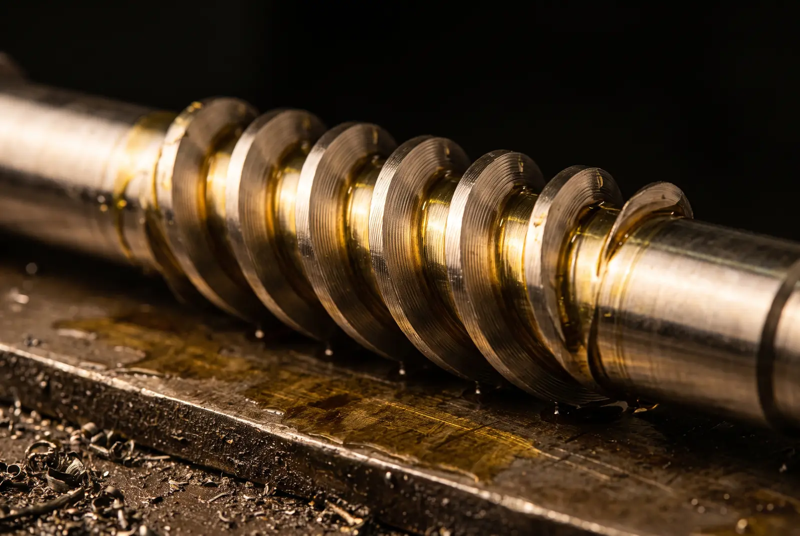
Straight answers, from the same spec sheets we quote from.
Size the expeller by daily seed input. Up to 5 tonnes a day, a mini oil expeller on a 3–15 HP drive is enough. Above that, a high capacity oil expeller on 20–75 HP is built for continuous 24-hour crushing of 5 to 50+ tonnes a day.
Not sure? Send your seed type and target tonnes per day on WhatsApp and we will recommend a model.
| Spec | Mini oil expeller | High capacity oil expeller |
|---|---|---|
| Seed input | 1–5 tonnes/day | 5–50+ tonnes/day |
| Drive power | 3–15 HP | 20–75 HP |
| Operation | Manual / semi-automatic | Semi / fully automatic |
| Duty | Small-scale batches | Continuous 24-hour running |
| Build | Cast iron / MS / alloy steel | Heavy-duty cast iron / alloy steel |
| Best for | Village units, farm processing, start-ups | Commercial mills, multi-seed plants |
| Warranty | 1 yr new · 3–6 mo refurbished | 1 yr new · 3–6 mo refurbished |
Choose a plastic hydraulic filter for a new plant: it is about 50% lighter, corrosion-free, hydraulically closed and the better-value option. Choose a casting oil filter when you need maximum durability for high-volume, continuous milling.
Both remove suspended solids, wax and fines from freshly pressed oil, in 320–630 mm plate sizes.
| Spec | Casting oil filter | Plastic oil filter (hydraulic) |
|---|---|---|
| Plates | Cast iron (SS optional) | Food-grade polypropylene |
| Closing | Manual or hydraulic | Hydraulic cylinder |
| Weight | Heavy-duty | About 50% lighter |
| Plate sizes | 320, 400, 470, 630 mm | 320–630 mm |
| Plate count | 10–60 plates | As per capacity |
| Best for | High-volume, continuous milling | New plants, mid-scale units |
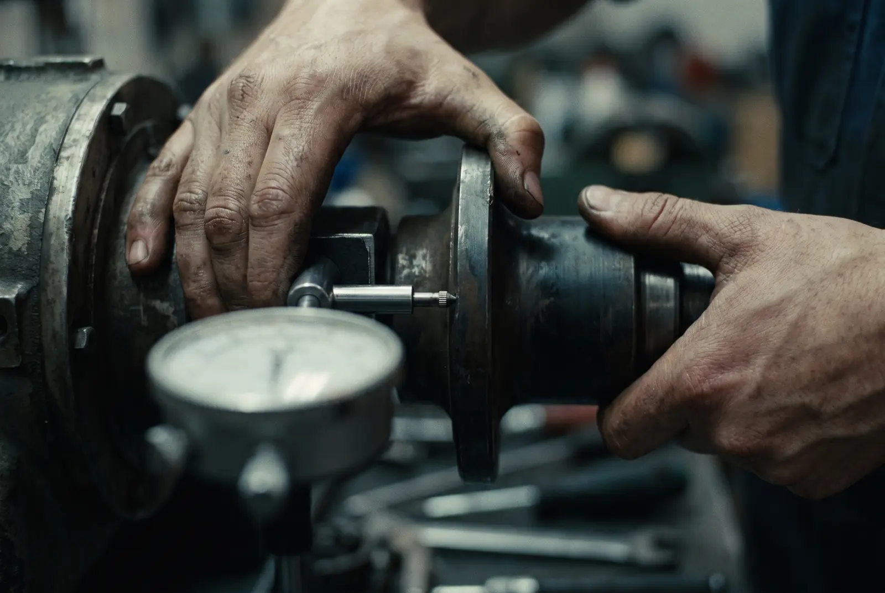
Civil guidance, machine installation and alignment, commissioning and operator training — mini (1–5 TPD) to industrial (50+ TPD) plants, typically in 2–10 weeks.
Scheduled service visits for expellers and conveyor lines, so wear is caught before it becomes a breakdown.
Move an existing mill or dismantle an old plant with safe equipment recovery.
Inspected refurbished machines at lower cost, and a commission-agent service to sell your old plant to buyers across India.
National Machinery Stores is an oil mill machinery manufacturer, supplier and service contractor based in Kadi, Mahesana district, Gujarat. Founded in 1998 by Iqbalhusen Chisti, it supplies and erects oil expellers, filter presses, conveyors and refining equipment for edible-oil mills in 18+ Indian states and exports to Africa.
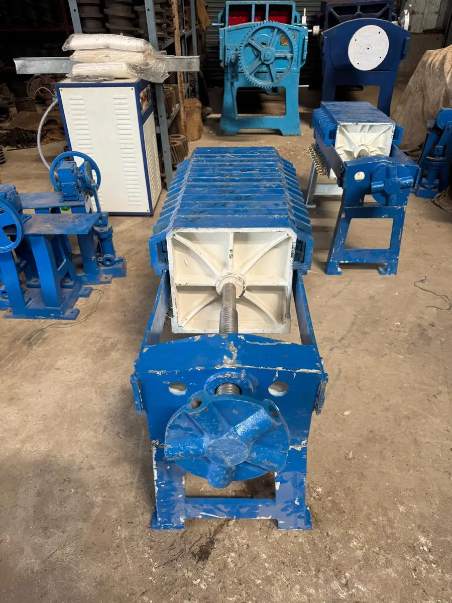
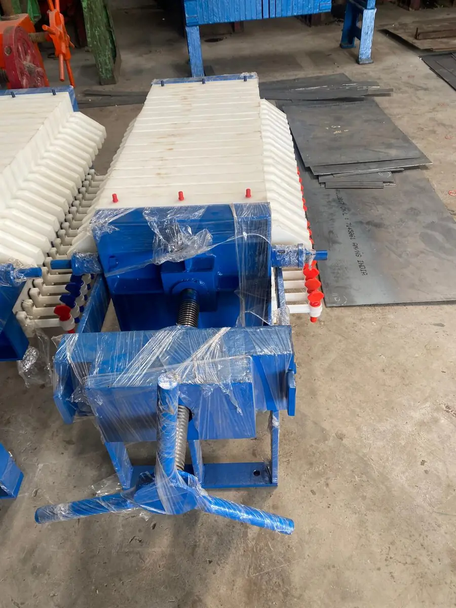
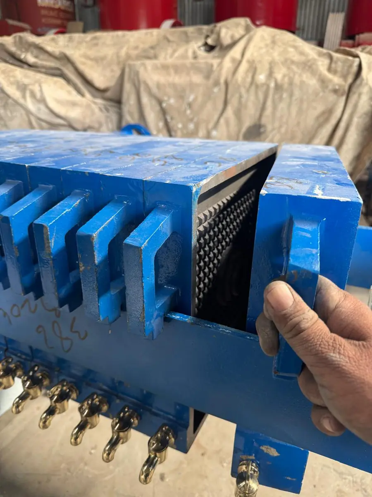
Real photos of machines we supply — not renders.
National Machinery Stores was founded in 1998 by Iqbalhusen Chisti in Kadi, Mahesana. What began as a machinery dealership serving the Kadi–Mahesana oil-mill corridor is now a manufacturer, exporter, supplier and service provider for edible-oil plants across India.
Our office is on Nandasan Highway Road in Kadi; our factory and warehouse is at Survey No. 91, Kundal, opposite the Ultratech RMC plant. From there we supply oil mills, factories, dealers and distributors — and ship export orders to Africa.
We sell new and inspected refurbished machinery, act as commission agent for used plants, and stand behind every installation with erection crews, AMC visits and a spare-parts stock built to minimise downtime.
Started as a dealer for oil mill machinery, serving the Kadi–Mahesana oil-mill corridor.
Supply extended to 18+ states — Rajasthan, Maharashtra, MP, UP, Punjab, Karnataka and beyond.
Oil mill erection, demolition and total service contracts for the complete plant lifecycle.
Machinery, parts and service for oil mills, factories, dealers and distributors in India and abroad.
Not answered here? Ask on WhatsApp — a person from our sales team replies.
We supply Mini Oil Expellers, High Capacity Oil Expellers, Screw Conveyors, Conveyor Belts, Casting Oil Filters, Plastic Oil Filters (Hydraulic), Vassal Oil Neutralizers, Radler Chains, Oil Expeller Spare Parts and complete Oil Mill Machinery. We also provide Oil Mill Erection, Demolition & Total Service Contracts, including AMC.
Yes. We deal in both new and used (refurbished) oil expellers and oil mill machinery. We also work as commission agents: if you want to sell a used plant or machine, we connect you with buyers across India.
Size the expeller by daily seed input. A mini oil expeller handles 1–5 tonnes per day on 3–15 HP. A high capacity oil expeller handles 5–50+ tonnes per day on 20–75 HP and is built for continuous 24-hour running. Send your seed type and target tonnes per day on WhatsApp and we will recommend a model.
The plastic oil filter uses lightweight polypropylene plates closed hydraulically; it is about 50% lighter, corrosion-free, reasonably priced and the best choice for new oil mill plants. The casting oil filter is heavy-duty cast iron and more durable for high-volume operations. We help you choose for your setup and budget.
A Vassal Oil Neutralizer is used in edible oil refining to neutralise free fatty acids (FFA) in crude oil with caustic soda, improving oil quality, colour and shelf life. It is the first step of the post-extraction refining stage, before bleaching and deodorisation.
A Radler (Redler) chain drives an en-masse conveyor that moves bulk material such as oilseeds, cake, flour and granules through an enclosed trough without breakage or segregation. In oil mills it feeds seed to expellers and carries cake and meal away.
Yes. We supply clients in 18+ Indian states, including Rajasthan, Maharashtra, Madhya Pradesh, Uttar Pradesh, Punjab, Haryana, Karnataka, Andhra Pradesh and Odisha, and export to Africa and other international markets. Every order includes GST billing and transit-safe packaging.
Yes. Our Oil Mill Erector, Demolition & Total Service Contract covers complete plant setup — civil guidance, machine installation, commissioning, operator training and ongoing Annual Maintenance Contracts (AMC). Typical projects take 2–10 weeks depending on plant size.
Stocked spare parts are dispatched within 24–48 hours. We keep critical parts — worm shafts, barrels, cages and bearings — in stock to minimise mill downtime. For urgent needs, send a photo of the part on WhatsApp for the fastest response.
Our office is at 12, Someshwar Complex, Nandasan Highway Road, Kadi, Mahesana – 382715, Gujarat. Our factory and warehouse is on Kadi Nandasan Road, opposite Ultratech RMC Plant, Survey No. 91, Kundal (Kadi), Mehsana – 382715. We are open Monday to Saturday, 9 AM to 7 PM IST.
Our sales team speaks Hindi, Gujarati and English. Call +91 94267 01635 or message us on WhatsApp at +91 88666 88626; we call back within 24–48 hours.
No middlemen. Tell us the seed, capacity and city — our sales team replies on WhatsApp and calls back within 24–48 hours, in Hindi, Gujarati or English.